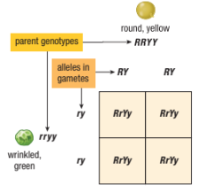
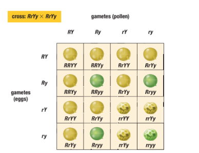
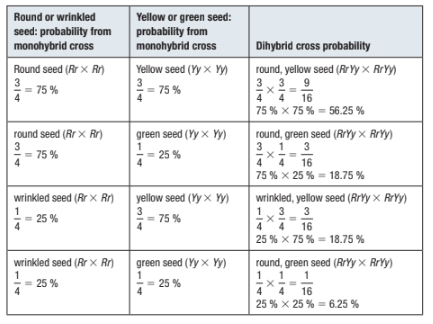

As you have learned, Mendel’s monohybrid crosses were based on one characteristic
controlled by one gene such as height (tall or dwarf) or seed shape (round or wrinkled) in a pea plant. As far as we currently know, genetic disorders such as cystic fibrosis and Huntington’s disease each involve only one gene. What happens when more than one characteristic is involved in a cross? Gregor Mendel asked such a question and then conducted experiments to determine the answer.
Mendel focused on two characteristics: seed shape and seed color. Recall that the dominant allele for seed shape is round (R) while the recessive allele is wrinkled (r). The dominant allele for seed color is yellow (Y), while the recessive allele is green (y). Mendel crossed two individuals that were heterozygous for seed shape (Rr) and seed color (Yy).
A cross between two individuals for two pairs of heterozygous alleles is called a dihybrid cross. In this case, the individuals were both RrYy. Figure 1 shows how Mendel used true-breeding parent plants to produce plants (the F1 generation) that were heterosis-gous for these two traits. He then used these F1 plants to perform a dihybrid cross.

|
A heterozygous individual for two characteristics will produce four possible gam-etes. A parent that is RrYy can generate the possible gametes RY, Ry, rY, and ry. Youwill see in Figure 2 that the alleles of the two genes—R and r, and Y and y—separateindependently during the formation of the gametes. Th is is called Mendel’s law of inde- Mendel crossed numerous heterozygous F2 off spring and noticed that the charac- |

Genetic ratios are probabilities. Recall that if a cross occurs between two heterozygous
individuals where one of the alleles is dominant, such as for widow’s peak (Ww 3 Ww),the phenotype ratio is 3:1. The total number of possible events is four, and the prob-
ability of producing an individual without a widow’s peak (ww) is 14, or 25 %. Similarlythe probability of producing an individual with a widow’s peak is 34, or 75 %.
Many genetic events occur independently of one another. A couple has a 50 % chance of
producing a boy for their first child. The probability of having a boy as a second child is
also 50 %, because the sex of the second offspring is not affected by the sex of the first.
When two events are independent of each other, the probability that both events
will occur can be calculated using the product law. The product law states that the
probability of two or more outcomes occurring is equal to the product of their indi-
vidual probabilities. The probability of giving birth to two boys is 1
2 3 1
2 5 1
4. Therefore,
there is a 25 % chance of having two boys.
Recall that in a dihybrid cross the phenotypic ratio is 9:3:3:1. Consider Mendel’s
work with heterozygous yellow seeds crossed with heterozygous yellow seeds
(RrYy 3 RrYy). The probability of producing a round yellow seed is 9
16 (about 56 %).
You know that the alleles of seed colour and seed shape are independent of each other.
If a cross is conducted between two heterozygous yellow seed plants (Yy), the prob-
ability of producing a yellow seed plant is 3
4 (75%). If a cross is conducted between
two heterozygous round seed plants, the probability of producing a round plant is 3
4
(75%). Using the product rule, the probability of producing a round yellow seed plant
from a cross between two heterozygous round yellow seed plants is 3
4 3 3
4 5 9
16.
The probability predicted by the product law is the same probability that is pre-
dicted by a dihybrid Punnett square. The product law also holds true for the other
three probabilities in a dihybrid cross

In Mendel’s work with pea plants, the genes that control two characteristics did not
interact with each other. This is the result of discontinuous variation. Pea plants were tall
or short, and seeds were yellow or green. There were no in-between values.
As you no doubt have noticed, there are many examples in nature where this is
not the case. Continuous variation is when the phenotypic variation is not clear cut. For
example, in the general population there are many variations of skin colour, from pale
white to dark black. This is because skin colour is not controlled by one gene, but rather
by three or more separately inherited genes from the father and mother. The genes are
on different autosomal chromosomes and their interaction is additive. An additive allele
contributes a set amount to a phenotype and is an example of continuous variation. Skin
color varies depending on which combination of six alleles the offspring inherit from
their parents. Each allele makes its own contribution and exhibits incomplete dominance.
Other alleles may also play a role. For example, alleles for freckles and red hair have a role in determining skin color. Other traits that are under the control of addi-
tive alleles are height, hair color, and eye color. Continuous variation explains the substantial variation of phenotypes found in nature.